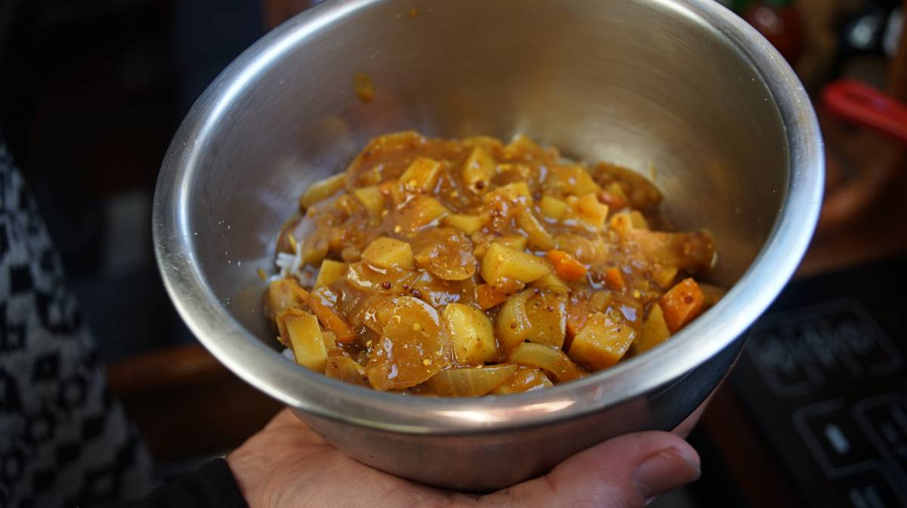

Vegetable curry
2 portions — 30 minutes
This recipe is a mixture between two things, Japanese kare(カレー) a milder and more basic version of Indian-style curry, and a poutine roux—ca parait qu'on est Québécois, right?
We make both Japanese kare and poutine at home, and eventually these two recipes became one because we liked it that way.
To make your own curry powder see this page, and to make your own garam masala mix see this page.
Sweetener. Grated apple, or pear, adds a subtly sweet tone to the dish, balancing the hot and strong spice flavors. It is possible to omit the fruit and to add a bit of sugar instead.
Rice. We usually alternate between basmati rice and short grain white rice(sushi rice). Both work well for this recipe. Note that short grain white rice uses a water to rice ratio of 1.25:1.
Roux. In this recipe we make a quick roux, a proper roux requires constant stirring and a longer cooking time. Keep in mind, the longer a roux is cooked the less thickening power it has, although the deeper the flavor of the roux will be (not important in this case because the roux is primarily a thickener). If you want roux with a deeper flavor, cook it for 15-20 minutes, or until it develops a dark chocolate color(keep in mind that you have to keep stirring the whole time). It's important to remember that roux requires equal parts fat and flour (weight, not volume).
Cutting root vegetables small We generally cut our root vegetables thin and small so they don't take too long to cook, it is especially important for us when relying on LPG to cook in the summer.
 sesame oilA splash
sesame oilA splash carrots1, large
carrots1, large yellow onion1, small
yellow onion1, small potatoes2, small
potatoes2, small
vegetables
- Bring a pot to medium-high heat, add a splash of vegetable oil (olive, sesame or canola) along with 1 large carrot cut into slices(approx. 1 cm thick), 1 small diced yellow onion and 2 small potatoes cut into cubes(approx. 1.5 cm thick). Mix and coat the vegetables with the oil for 1 minute.
- Cover the pot with a lid and reduce the heat to low. Let the vegetables cook for 10 minutes. Set aside with the lid on.
 basmati rice145 g
basmati rice145 g salt1.25 g
salt1.25 g water375 ml
water375 ml
rice
- Rinse 145 g (3/4 cup) of white basmati rice for a few minutes to get rid of the starch that makes the rice sticky. Basmati rice requires a water to rice ratio of 2:1. Feel free to use short grain white rice instead (ratio of 1:1.25 rice to water).
- Add the rice to a pot along with a bit of salt.
- Pour 375 ml (1 1/2 cups) of boiling water over the rice, then heat the pot(and its contents) at medium-high heat. When the water begins to boil, cover the pot with a lid, then reduce the heat heat to low. Cook for 15 min. Remove from heat and let rest for another 5 min with the lid still on. Divide cooked rice into two bowls.
 olive oil13 ml
olive oil13 ml all purpose flour20 g
all purpose flour20 g garam masala3 g
garam masala3 g curry powder3 g
curry powder3 g cayenne pepper powder1.5 g
cayenne pepper powder1.5 g apple1 small, grated
apple1 small, grated- water375 ml
 dijon mustard2.5 g
dijon mustard2.5 g tomato paste14 g
tomato paste14 g- salt1.25 g
roux
- Heat a pan to medium heat. When the pan is hot, add 13 ml of olive oil(vegan butter, or other neutral oil, like sesame, or canola).
- When oil is hot add 13 g of all purpose flour. Stir the flour into the butter continuously with a whisk(to better take apart clumps of flour). Reduce the heat to low and continue to stir for 5-7 minutes to cook the flour. As the mixture heats up, the flour will mix with the fat, swell, before becoming more runny. This is our thickener.
- Add 3 g (1 tbsp) of garam masala, 3 g (1 tsp) of curry powder and 1.5 g (1/2 tsp) of powdered cayenne pepper(possible to omit, but we like a bit of kick). Mix well.
- Stir in 375 ml (1 1/2 cups) of vegetable broth(or water, but add 15 ml(1 tbsp) of Japanese-style soy sauce and some garlic powder to flavor it up). Add 1 small grated apple(doesn't matter what variety), 2.5 g (1/2 tsp) of dijon mustard(see mustard from seeds recipe) and 14 g (1 tbsp) of tomato paste. Add the cooked carrots and potato mix and simmer for an additional 8-10 minutes.
- Season with salt and black pepper, serve over rice with some fermented vegetables overtop (see lactofermentation. We like to add sauerkraut, or mild kimchi(we don't use gochugaru in ours, just chili pepper flakes).